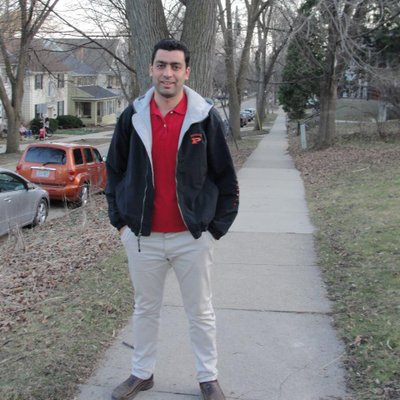

Current members
Sabrina T. Amorim - Ph.D. student [
WWW]
Idan Sabag (jointly with Zvi Peleg) - Ph.D. student [
WWW]
Ye Bi - Ph.D. student [
WWW]

Rafael M. Yassue - Visiting Ph.D. student [
WWW]
Kenan Burak Aydin - Ph.D. student [
WWW]
Former lab alumni
Haipeng Yu - Ph.D. student [
WWW]

Malachy T. Campbell - Postdoctoral scholar [
WWW]

Mehdi Momen - Postdoctoral scholar [
WWW]

Waseem Hussain - Postdoctoral scholar [
WWW]
Former visitors
Toshimi Baba - Visiting scholar [
WWW]

Sara Pegolo - Visiting postdoctoral scholar [
WWW]
Gerardo Mamani - Visiting Ph.D. student [
WWW]
Luiz A. Peternelli - Visiting scholar [
WWW]
Francisco José de Novais - Visiting Ph.D. student [
WWW]

Juliana Petrini - Visiting postdoctoral scholar [
WWW]

Jun He - Visiting scholar